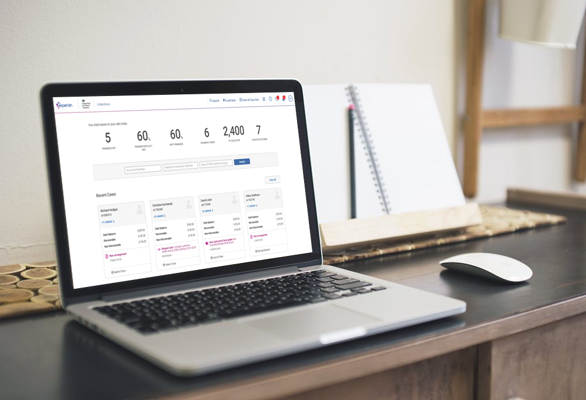
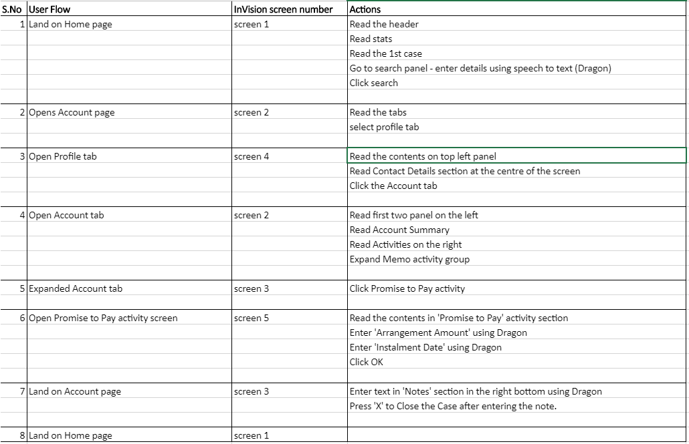

Designed and developed an easy interactive experience for the disabled, using assisstive technologies
Experian, a major Foolproof client manages and protects fraud of credit card data.
The project aimed at developing a web application mainly focusing on making it accessible for the disabled by following the user journey and testing the same with JAWS (Text to speech) and Dragon (Speech recognition) softwares.
Experian wanted to expand their horizon by targetting audience with special needs. And Foolproof being a design agency already follows minimum of AA standards in web accessibility, so this gained the confidence of the client and project was easily won.
I was a part of 5 members team, 3 researchers/developers from Zensar and 2 Senior associates from Foolproof
My role was to form an initial understanding on the target audience and the assisstive devices to be used for testing. And also how accessibility standards can be met in the development phase by keeping the focus on the user. Develop web pages as a team following the WCAG level AA standards.

The requirements were given in the form of user journey and a few design screens on InVision

Experian wanted to add a new functionality of searching for a users' profile based on their account number/social security number. As per their existing webpages, regular users could easily follow the user flow and complete the desired task. But the same could not be achieved by the specially abeled group of people.
Accessibility being a highly important aspect yet being ignored by many design and dev teams of top notch websites, we took assistance about WCAG standards and best practices followed by Michael Kors development team, which is another major client of Zensar
The speciality of the project lied in the users it had to target to, which included people with
Users had to clearly understand the complete user flow and perform specified set of operations like
To fulfill these tasks, assisstive technologies like JAWS(text-to-speech) and DRAGON(speech-recognition) were used.
Typically, experience designers regard: form, function, quality, and innovation as setting the gold standard for good design. That said, good design only earns its label if every consideration has been made with regards to it being accessible
Accessible design, in its digital context, is about an appropriate interaction between a user with a disability and an interface. Accessibility is important, from the perspective of human-centred design
When developing the Accessible design, following standards were followed
World Wide Web Consortium (W3C) Web Accessibility Guidelines V2.0. Aimed to meet the Web Content Accessibility Guidelines (WCAG) level AA as a minimum
Guidelines followed based on Accessibility rule book
JAWS, Job Access With Speech, is the world's most popular screen reader, developed for computer users whose vision loss prevents them from seeing screen content or navigating with a mouse. JAWS provides speech and Braille output for the most popular computer applications on your PC.
Dragon speech recognition software is better than ever. Talk and your words appear on the screen. Say commands and your computer obeys.
Working on an accessibility project for the first time had it's own positives and negatives, but I'm sure I bettered at my UX learning by targetting different set of audience.
The client was extremely happy with the screens and testing done within a short period of time. Working with Experian and engaging with users with disability and understanding their requirements was indeed a great experience.